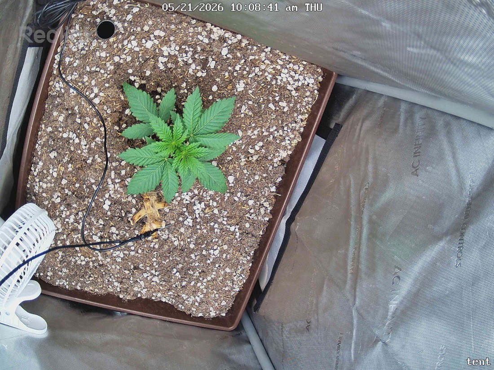

← All reports
May 21, 2026
Thu May 21, 2026 — 10:08 AM

Prognosis
Daily prognosis — Papaya Crush, day ~23 from germ / day ~16 in tent
- Camera angle changed, not the plant's location — current shot is more top-down and wider, so the plant looks repositioned but it's the same pot. Easier to read canopy from this angle going forward.
- Growth: clear progress vs. 07:01 — more visible leaflet fingers, blades look longer and slightly more serrated, canopy footprint expanded. Healthy node stacking, no stretch.
- Color & posture: uniform deep green, flat blades, slight upward "praying" tips in the current shot = happy under light, not tacoing. No bleaching at center despite the bump to 400 PPFD.
- No stress signs: no edge burn, no interveinal yellowing, no clawing, no spots, no pest evidence, no powdery residue. The yellow object near base is a fallen cotyledon/debris — leave it (no-till).
- Soil surface: perlite-rich, looks appropriately dry on top — consistent with normal dry-back. Small oscillating fan now visible in frame, good for stem strengthening at this stage.
- Phase check: ~3 weeks from germ, ~2 weeks in tent — squarely in early veg. You should be seeing 3rd–4th true node forming, which matches. Right on track.
- PPFD note: 400 is being tolerated cleanly with flat dark leaves and no light-stress tells. Hold here for a few days before considering another bump; let leaf area catch up to the light.
Suggested next actions: no action needed — hold PPFD at 400, maintain current watering cadence, and keep logging. Consider filling in the blank fields in grow-context.md (fixture model, light schedule, watering volume) so future comparisons have more signal.
Overall: healthy, on-schedule early-veg seedling responding well to the recent light bump — keep doing what you're doing.